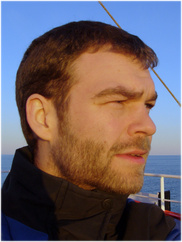

Senior Fisheries Scientist at SPC
My current job focuses on tuna
assessments and
the management of scientific data and workflows
for the Western and Central Pacific Ocean.
Worked at GFCM (FAO) as senior
biostatistician, creating STAR,
at ICES as professional officer, creating TAF,
and at Hafro as fisheries
stock assessment scientist.
Before that, I attended the
University of Washington.
Full employment history on LinkedIn.